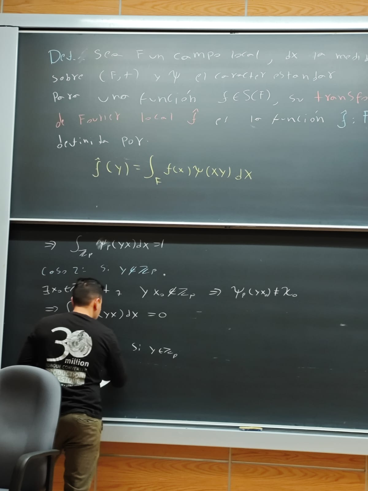

{{ course.en }}
{{ course.description_en }}
Course pageTeaching
Since 2021, I have served as a Teaching Assistant at the School of Sciences (UNAM), with regular classroom responsibilities and experience preparing guides, problem sets, and exams in $LaTeX$.
I prioritize intuition before formalism: abstract definitions are introduced alongside concrete examples and geometric interpretations, with the goal of developing conceptual understanding as well as technical fluency.
A central motivation in my academic career is to help strengthen the study and research of Number Theory in Mexico through teaching, mentoring, and the development of accessible mathematical materials.

Semester {{ site.data.courses.current_semester }}
Direct access to the courses I am teaching this semester.
{{ course.description_en }}
Course pageSince 2021
A complete record of the courses in which I have participated as a teaching assistant.
| Course | Semesters |
|---|---|
| {{ course.en }} | {{ course.semesters }} |